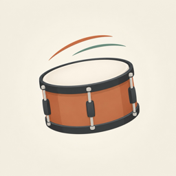

DrumatticDrumattic support
Quiet drum practice with your iPhone and Apple Watch.
Email dal001.dev@gmail.com — or use Profile › Send feedback in the app, which adds your app version and device model for us. We usually answer within a few days.
Getting started
- Hold your iPhone the way you normally do, screen up, and swing from the wrist in small taps.
- Wear your Apple Watch on the other wrist and open Drumattic on it, then tap Start.
- Do Profile › Set up my kit once (about 2 minutes) so Drumattic learns where you reach for each drum.
Common questions
Hits go to the wrong drum. Run kit setup again, or tap Re-centre on the snare on the Play screen and hit the snare three times.
The watch hand doesn't play. Keep the iPhone app open on Play, open Drumattic on the watch and tap Start. Bluetooth must be on. The status at the top of Play shows the watch connection.
Does it work with the screen off? Yes — lock the iPhone during play and keep drumming. Switching to another app stops the session.
Is anything saved to Health? No. The watch uses a workout session only to stay awake while you drum, and discards it when you stop.
What data do you collect? Nothing unless you turn on Share motion data. See the privacy policy.
Delete my data. Profile › Delete my data removes everything on your device. For data you shared, email us your install ID (Settings).